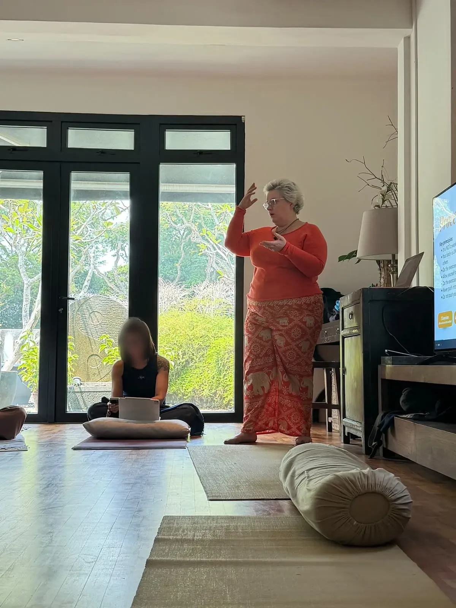
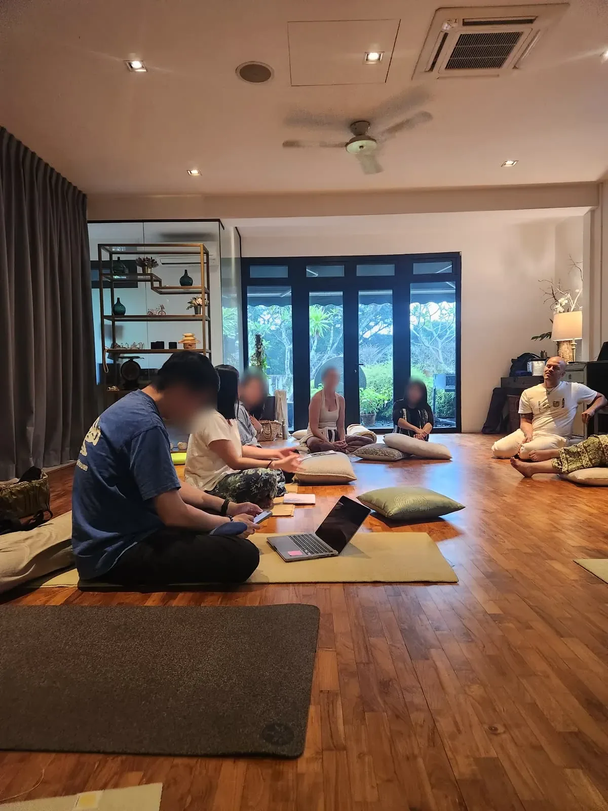
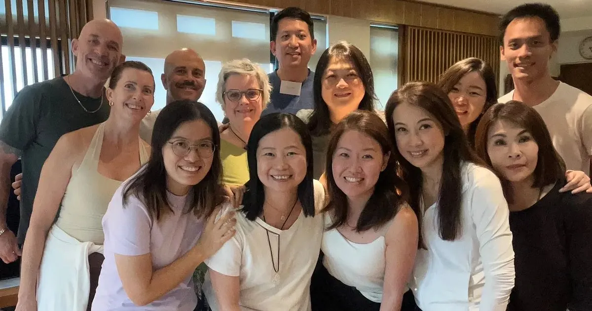
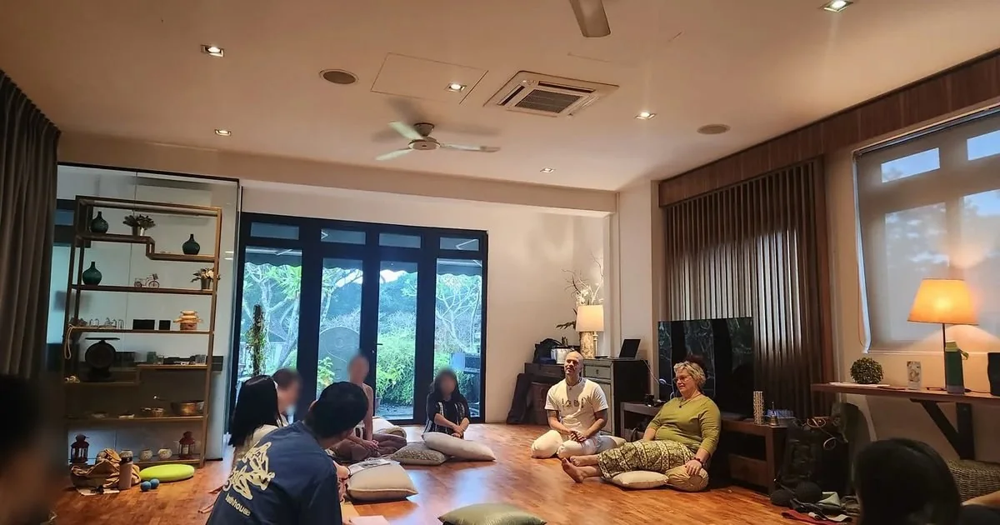
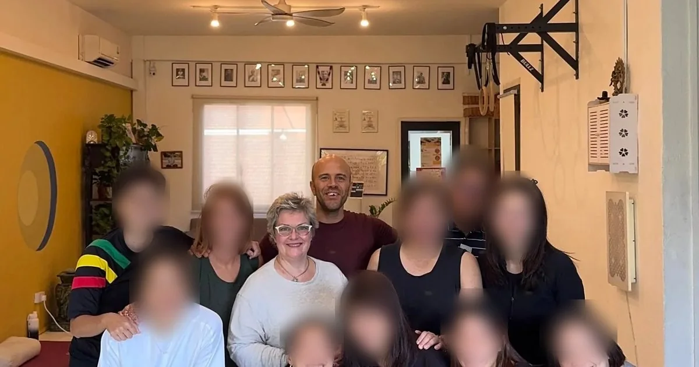

One hub for TRE™ in Singapore, built by a practitioner who needed it herself.
TRE™ in Singapore exists to make TRE™ easy to find, safe to learn and rewarding to teach.
It was established by Isabelle Claus Teixeira, a Global TRE™ Certifying Trainer active in Singapore and worldwide. It brings together certified providers, trainees, allied professionals and first-timers who simply want to feel calmer, sleep better and recover faster.
Isabelle spent more than 30 years as a Senior HR Business Partner and Talent Management leader in Fortune 100 companies across nine countries. She experienced first-hand what toxic work environments do to a body, and healed through somatic practice, TRE™ and mindfulness. That experience became her second career.

Isabelle teaching, TRE™ Module 2, September 2026
How it came about
2017First TRE™ session
Discovers TRE™ while recovering from burnout and begins a daily practice.
2019Certified TRE™ Provider
Starts teaching individuals and groups in Singapore, Japan and online.
2025Global TRE™ Certifying Trainer
Begins running the full three-module certification in Singapore and launches this hub.
Who it is for
First-timers
People, teams and organisations who want to try TRE™, understand it, and find a certified provider or an event.
Professionals
Coaches, therapists, HR leaders and movement teachers who want to train, or to bring TRE™ into their own work.
Certified providers
Practitioners who want to be visible, supported and growing together in a shared home.
Every page serves both paths equally: the newcomer route (provider, event) and the professional route (the intake call).
III
The name
Always TRE™ in Singapore. The mark travels with the three letters, everywhere they are read.
Name
TRE™ in Singapore (always with the ™)
Method
TRE™, Tension & Trauma Releasing Exercises, created by Dr. David Berceli
Descriptor
“The home of TRE™ practitioners, trainees and first-timers in Singapore.”
Operated by
Business & Human Development Consulting Pte Ltd (BHD Asia)
Trademark line
“TRE™ is a registered trademark of TRE For All, Inc.” (footer of the website)
People
“Providers”. Web addresses keep the older word /facilitators.
Credits
ICF CCEs. Other marks are written as supplied, for example PSYCH-K®.
Design direction
“Release, made visible.”
Writing the letters
Learn TRE™ in Singapore
Find a certified TRE™ provider
Learn TRE in Singapore (bare letters)
Never the registered-mark symbol after TRE
File names, web addresses and form values are exempt.
What the brand is not
TRE™ in Singapore is a community hub, not the owner of the method. Never call it a licensee or a chapter. The trademark belongs to TRE For All, Inc.
On the website every “TRE™” in running text opens a short explainer bubble for newcomers.
IV
Values & voice
Plain-language, welcoming, regulated. The audience is looking for relief, so the page never raises its voice.
Plain-language
Seven exercises, one natural reflex. Explain the method the way you would to a friend.
Welcoming
Two paths, one hub: newcomers and professionals both find their next step on every page.
Regulated
Calm and breath-paced, never overstimulating. Real people and real rooms carry the trust.
Say
Certified provider
Global TRE™ Provider Certification
“You control the intensity.”
“Without needing to talk about what happened.”
Find a certified provider · Book a free call
Avoid
Clinical promises
The bare letters TRE, or a registered-mark symbol after them
Eyebrow labels above headings
Emoji or glyph icons
Invented numbers or testimonials
In the brand’s own words
You never need to talk about what happened. You control the intensity, and you can stop at any moment.
Fight, flight, and the reset the body was designed for.
Science-backed, body-first, people-centred.
V
Taglines
The lines the brand already uses, and where each one belongs.
The home-page hero and the signature line. The last phrase is the italic accent: bronze on light, gold on navy.
Descriptor
The home of TRE™ practitioners, trainees and first-timers in Singapore.
Under the name, in a footer, or wherever the logo needs one sentence of context.
Hero sentence
Learn TRE™, Tension & Trauma Releasing Exercises, with certified providers in Singapore, or train to become one.
Always paired with the two paths: see how TRE™ works, find a certified provider.
Headlines
Your body already knows how to let go.
One hub for TRE™ in Singapore.
From Fortune 100 boardrooms to the mat.
Calls to action
Primary routes: See how TRE™ works · Find a certified provider · Book a call · Book a free call · Book a certification intake call · Certification pathway · Start with the basics · Meet the providers · Get listed.
Secondary links: Browse providers · See upcoming events · Explore the pathway · How TRE™ works · Read the beginner’s guide · All providers · All events · Practice circles · All articles.
VI
Logo system
A globe, an eagle and Singapore. Used exactly as supplied, on light grounds, never redrawn.
The artwork
A blue globe with bronze continents, a bronze eagle in flight, the italic “TRE” and the tagline in bronze.
The local line
A navy rule and “Singapore” in bronze italic. Keep them attached.
Light grounds only
On navy or on photos, always place it on a white panel. No official white version exists.
Master file
715 × 389 px PNG with transparency.
On light and dark grounds
White. The cleanest ground.
Cream #FAF6EF, the section ground.
Navy, photos and bands: inside a white panel.
Clear space and minimum size
xxxx
Clear spacex is the height of the capital letters in “TRE”. No source value exists, so this is the suggested rule.
Minimum140 px wide, so that the tagline can still be read.
Website header214 px wide WebP shown at 107 × 58 px (46 px high once scrolled).
Co-brandTop left when practitioners are the audience.
140 px, the minimum107 px header size
Misuse
✓
Full colour on white.
×
Straight on navy, no panel.
×
Globe or eagle recoloured.
×
Tagline or “Singapore” cropped away.
×
Stretched or squashed.
×
On a photo, no panel.
×
Learn TRE today
Bare “TRE” in running text.
×
TRE
A redrawn or retyped wordmark.
Open item. The supplied artwork carries a registered-mark symbol beside the letters. It is used as supplied until Isabelle provides a corrected file, ideally with a vector and a white version. Written text always uses TRE™.
VII
Colour
Navy from the globe, bronze from the eagle. One orange action per view. Click any value to copy it.
Primary
Tinted neutrals and supports, never pure grey
In proportion
Bronze and gold lines are the only drawn colour. Text on orange is navy-ink #0F1F3D (6.1:1), never white. Gold is a line and an accent on dark, never text on a light ground.
Contrast, computed live
WCAG 2.2 ratios. AA needs 4.5 for body text, 3 for large text (24 px, or 18.5 px bold).
VIII
Typography
A pair, with an italic accent. Upright 700 headlines, one italic phrase.
Aa
Plus Jakarta Sans
Headings, labels, buttons, stats. 600, 700 and 800, plus the italics. Self-hosted, SIL OFL.
Pills, the release field, record cards and photo windows. Hover the buttons, then move across the field and click it.
Buttons
Orange is the one primary action in view, with a navy-ink label. Record cards use navy, never orange.
The release field
Release, made visible.Move across it, then click: charge, release, settle
The background of every page hero except the home page, which keeps its film. Contour lines breathe on a 9 s cycle and part around the pointer; a click or tap sends a release wave through them, and through the resonance core on the open side. Gold dust rises and scatters. Lines stay quiet behind the copy (10% at the left) and reach 42% on the right.
Gold
Events and event pages
Blue
Education, certification, providers, guide
Bronze
Blog and articles
Mist
About, contact and the rest
Cards, badges and windows
Certified providerSingapore
Record card
Paper ground, 1 px hairline, 16 px radius, 24 px padding. At most two badges. Navy primary button.

A drawn gold hairline fades to nothing. Diagrams without real data carry the label Illustrative.
Tokens
Radius
6 · 10 · 16 · pill
Spacing
4 · 8 · 12 · 16 · 24 · 32 · 48 · 64 · 96 px
Max width
1180 px content column
Shadow
0 2px 6px rgba(19,43,86,.07), 0 18px 44px rgba(19,43,86,.13)
Focus
3 px solid gold #C9A45C, offset 3 px
Focused
Forms
Inter 1 rem · 48 px high · 1 px #E4DFD6 border · 10 px radius · orange caret · focus navy with a 4 px gold ring at 30%. Error #B9412F.
X
Photography
Calm rooms, people on mats. Real sessions, real trainers, real cohorts, and every participant's face blurred. Only facilitators stay sharp.
Providers and cohorts together, with every participant's face blurred (an even soft blur over the whole face and hair). Isabelle, Simba and listed facilitators stay sharp; when unsure who someone is, blur.
Photos live in galleries, record pages and share images. Page heroes use the release field; only the home page has a photo hero.
WebP on the website, at every size. Share images (1200 × 630) stay JPG for LinkedIn and Facebook.
Stock people and invented personas.
A participant's face left sharp, in any copy or size of a picture.
Photos in page heroes (other than the home page).
AVIF, PNG or JPG pictures on pages.
The Reiki certificate photo.
Click a photograph to enlarge it, then use the arrow keys.
XI
Motion
Rich but calm, and paced like a breath. Everything follows one rule: charge, release, settle.
ChargeReleaseSettle
Anatomy of a hero, six layers
The navy room. #0B1730 to #122A52 at 160°, a 7% grain.
Three light orbs drift on 17 to 28 s loops and lean up to 90 px toward the pointer.
The release field. 12 to 24 contour lines breathing on a 9 s cycle, parting around the pointer.
Release waves from a click or tap, and a soft idle pulse every 6 s, travelling at 420 px a second.
The resonance core and gold dust on the open side.
Copy settles from a 14 px rise over .95 s, 90 ms apart. No blur, no photo credit.
Timing
--ease
cubic-bezier(.2,.7,.2,1), 320 ms
--ease-out
cubic-bezier(.16,1,.3,1), 600 ms
Durations
.18 · .32 · .6 s
Hover and press
Lift 2 px in 320 ms, press to .98 in 180 ms
Primary button
Sheen in .6 s, arrow slides 4 px
Hover the strip: the dot lifts, then settles.
Care
A site-wide pause switch stops everything that moves on its own. Reduced motion gets a fully still version. No bounce or spring motion. Heroes draw at about 30 fps at rest and 60 fps while touched, stop off screen, and never use blur filters. The sidebar of this book has the same pause switch.
XII
Background kit
Cream grounds, navy fields, one soft wash. Click a value to copy the CSS.
Light only. Navy appears as bands, hero fields and the footer, never as a dark mode of a page or a post.
XIII
Iconography
Bare inline line icons at a 1.75 px stroke, in navy. Never inside tiles, never emoji.
Style samples, drawn to the site’s rule: round caps, round joins, no fill. The arrow after a link is bronze and slides 5 px on hover.
XIV
Events & social
Event cards, record pages and share images. Practitioner pieces lead with TRE™ in Singapore.
Event cards use the shared HummingBeing card design, light and without a QR code. Check dates and fees on the live events page before quoting them, and never print a discount code.
The events page
Next upcoming event card: title, date, the visitor's own time, Register · View event · Add to calendar, a four-tile countdown and a stats row.
Upcoming Events: filter pills with counts (All · Certification · Speakers events), Grid or By month, the final-sale note.
Three-column cards: poster, tags, title, date and place on one line each, a two-line description, price, Details and Register.
Past and sold out events in the same grid below.
The same layout as bhdasia.com/events and hummingbeing.com/events.
Share images, 1200 × 630

About

Education

Blog
Formats
Format
Size
Layout
Share image
1200 × 630
A real photo under a navy grade, the logo on a white panel, a Plus Jakarta Sans headline.
Website event card
1920 × 1080
The shared card design, supplied through the card field of the events data.
Page hero
Web, full bleed
The release field on the navy room, no photo. The home page alone keeps its film and still.
Event record page
Web
Hero: tag pills (format, category, date, price, credits, starts in), the short title, the subtitle-led lead, Register and Details. Then a facts strip, the poster first in the content column, About · What we will explore · Who it is for · Led by · preparation, a sticky register box and three compact related events.
Event blog posts
Web
Preview and recap drafts, published only once approved.
Social posts
Not yet set
There is no TRE™ in Singapore social series yet. Practitioner pieces lead with TRE™ in Singapore under the co-branding rule.
Learn TRE™ (Tension & Trauma Releasing Exercises) in Singapore: find a certified provider, join a workshop or train to become a Global TRE™ Certified Provider.
Navigation
Home · About · Education · Providers · Events · Blog · Contact · Book a call. On phones, a full-screen navy-ink sheet below 980 px.
Header
Sticky white at 94% (98% once scrolled). Links in Plus Jakarta Sans 600 with a 2 px gold underline. Logo at 107 × 58 px, 46 px when scrolled.
WebP only on pages, in 400 to 1600 px copies; share images JPG. Every participant's face blurred.
Signature
The release field, TRE™ explainer bubbles, a motion pause switch and breakpoints at 380, 480, 520, 560, 600, 640, 760, 900 and 980 px.
Open item. The site favicon is a drawn globe and is not taken from the official artwork. There is no PNG or touch icon yet.
XVI
Family & co-branding
Three brands, one founder. When two share a piece, one leads and the other supports.
Parent · organisations
BHD Asia
Business & Human Development Consulting Pte Ltd. Executive coaching, HR consulting and TRE™ resilience programmes for organisations.
Wellness · individuals
HummingBeing
Isabelle’s coaching and somatic brand: TRE™, somatic coaching, bodywork and mindfulness.
Community · practitioners
TRE™ in Singapore
The hub for certified providers, certification, workshops and practice circles. This book.
Who leads
Lead brandTop left and larger. Its palette and typeface run the whole design. Chosen by audience: organisations, BHD Asia; individuals, HummingBeing; practitioners, TRE™ in Singapore.
Partner brandTop right and smaller, in a white pill with “in partnership with”. Use its horizontal lock-up and never recolour it.
CollaborationsMulti-organisation events keep every partner logo the client supplied. Never strip one out.
Lead, top left
in partnership withPartner logo
Piece for practitioners: TRE™ in Singapore leads
XVII
Rules
What to do every time, what never to do, and the rules that apply to every Isabelle brand.
Do
Navy fields, cream grounds, bronze and gold lines.
One orange call to action in view, with a navy-ink label.
Upright 700 headlines, with the accent italic: gold on navy, bronze on light.
The logo on white or a white panel. Keep “Singapore” attached.
TRE™ in every visible line.
Offer both paths: provider or event, and the intake call.
Blur every face except the facilitators', in every size of a picture.
Don’t
Use the old hand-drawn vector logo file as the logo.
Put the full-colour logo straight on navy or on a photo.
Use gradient text, coloured side stripes or bounce motion. Small gold eyebrows only on event record pages, as on HummingBeing and BHD Asia.
Publish a photo with a participant's face unblurred.
Make clinical outcome promises.
Call the brand a licensee or a chapter.
Use the Reiki certificate photo.
Across Isabelle’s brands
TRE™, always
The three letters carry ™ in all visible text. Never the registered mark, never bare.
One public email
bonjour@bhdasia.com only, written as text and not as a mail link. Never a personal address.
No discount codes
A discount code is never printed on a poster, a card or a page.
Simba’s logo
When Simba appears on a material, use his Living with the Spirit logo.
The rainbow hummingbird
It is Saymara’s logo and appears only on Saymara events, never in this brand’s own materials.
ICF CCE badge
Only on ICF-accredited events.
Accessibility
Reduced motion is respected, touch targets are at least 44 px, and reading content works without JavaScript.
Open items for Isabelle
The logo artwork carries a registered-mark symbol while the text rule is TRE™.
There is no vector or white version of the logo, and the favicon is not drawn from the artwork.
The wording for ICF credits (CCEUs or CCEs) is not yet settled.
The brand’s formal status with the trademark owner is undocumented, so avoid “licensee”.
XVIII
Downloads
The logo as supplied, the colour tokens, and the typefaces. All files sit beside this page.